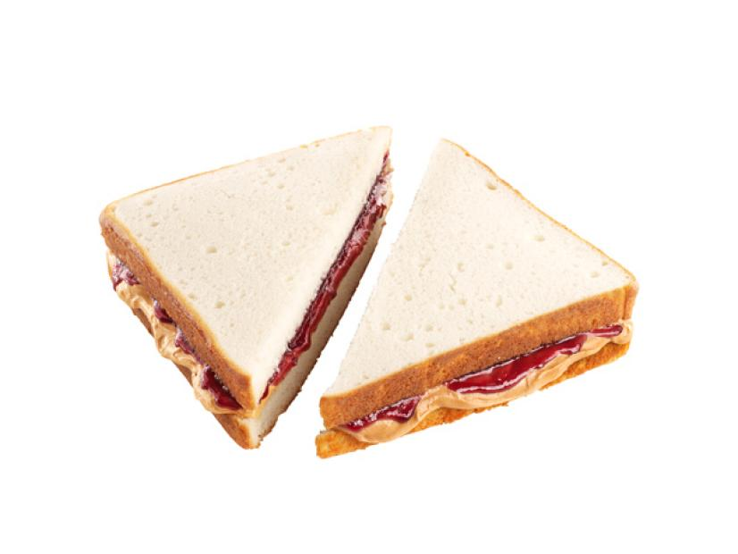

Fletcher Henderson
ingredients
directions
- penutbutter
- spread punut butter on a peice of bread
- spread jelly of a peice of bread
- put the peices together with the penut butter and jelly facing each other

contact me
E-mail me here!
University of Montana
32 Campus Dr
Missoula, MT 59812
Here is another great resipe!